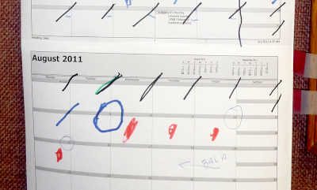

Archive Index of the original STIXY postings
Or “Dispatches” as I was calling them back then.
I documented the first 14 months after my retirement using the STIXY web site. I still can hardly believe how much traveling and all the things I did in those first 14 months... all after I got rid of my car.
But then all these postings were lost when STIXY went dark the following year. But now, after 12 years, I have resurrected a backup copy of those old files and loaded them onto a different server so that a record of that amazing year can be available.
One Warning about STIXY: One of the reasons they terminated the STIXY project was that STIXY pages don’t render very well on a small (i.e. Smartphone) screen. To really appreciate them you will probably need to use a computer (or perhaps a Tablet). I know this is a problem for modern users who tend to do everything on a tiny phone screen, but as I said, that’s one reason the project died. And in any case, I think it’s worth it to find a bigger screen to enjoy these pages anyway. Ideally you can get then up onto your huge living room TV.
If you are on a computer recall that most browsers allow you to zoom in and out using the CTRL key with the Mouse Wheel. You will find this invaluable for reading the text and maximum enjoyment of the photos.
So Happy Viewing... and Happy Travels to all !!!

Want to see the PREQUEL? Here is a link to a story I wrote about the events
before I retired and the ideas that led up to my early (age 55) departure from
the working world…. Countdown to Retirement 1989-2011
8 Sep - 8 Oct, 2011
The frantic last minute rush as I leave my apartment in Miami Lakes
and fly to Germany where I would stay for about 1 month.
This posting includes links to these web items.
Video: Rocky Learning Frisbee 3 Min 40 Sec
Web Photo Album: Lisa's House In Germany
Web Photo Album: Walking in Berlin 13 Sept 2011
Web Photo Album: Frederick's Palace In Potsdam
4 Oct – 26 Oct, 2011
A final look at Germany
Then my Return to Florida to meet up with
some old and not so old friends and recharge
to begin my long crawl with no car up the eastern U.S.
Ft. Myers and The Winter Home of Thomas Edison.
Endre and his wife Yvonne and other friends in Bradenton.
This posting includes links to these web items.
Map: showing my Route in my first 15 Months after retiring.
Video: Skiing Chair 1 Minute
27 Oct – 5 Nov, 2011
Orlando and Universal Adventure Island
Lake City with Miro and Sue
Jacksonville and The Budweiser Brewery
6 Nov, 2011 and 8 Nov, 2011
Savannah Georgia including Bonaventure Cemetery
This posting includes links to these web items.
Web Photo Album: Savannah Pictures
Web Photo Album: Photos of Bonaventure
7 Nov, 2011 and 9 Nov – 11 Nov, 2011
A side trip to Screven, the home town of my mother
where I meet my cousin Troy and his wife for the first time.
Then it’s on to Atlanta where I stay with couchsurfing hosts,
visit my old school, Georgia Tech,
and I tour the CNN complex, then the sickly sweet World of Coca-Cola.
12 Nov - 22 Nov, 2011
Driving the Blue Ridge Parkway
I start with photos of Fred in high school days, then move
on to the current day in Asheville with Fred and Lori.
Likewise a few Pics of my cousin Cliff and his
family in younger days, then Cliff and Betty in Jackson NC
And then we see my friend Chuck first in High School
then we meet present day Chuck and his wife in Durham NC
22 Nov 2011 - 19 Dec 2011
Here again I begin with pictures from the old days
of my friend Maria, her family and some of our old friends.
Then we come forward for a visit with Maria and her
husband Steve in Saint Paul 2011.
After a pleasant train ride I am in Milwaukee with a couchsurfing host.
There I visit two museums. The fabulous Milwaukee Art Museum and the Harley Davidson
Motorcycle Museum.
This posting includes a link to this web item.
Podcast: RadioLab episode “Choice” with a segment about the perils of over
analyzing why we like it.
3 Dec – 6 Dec 2011
A visit to Chicago
This posting includes links to these web items.
Video: Walking under CloudGate 1:28
Web Photo Album: Chicago Dec 2011
Podcast: An episode of “This American Life” featuring Chicago’s “Wiener Circle”.
6-11 Dec 2011
My visit to Tiffin and Toledo
I visit the town in Ohio where my Grandfather
grew up and my Father was born.
Then I move on to Toledo where I stay in the ancient
Hotel Lorraine, a faint echo of that city’s former prosperity.
11-20 Dec 2011
Once again I start with old time pictures, this time
of my friend Gipsi. Then we move up to current Bloomington
where we me her and her family.
But that’s not all. From Bloomington I make two side trips.
One to Crawfordsville where an Uncle had been a artist
of local renown. Many years after his demise he is still know there.
Later another side trip to Louisville. And yes you know it,
some old photos of my friend Clifford. Then forward to a
current visit with Cliff and his Mom who is still going strong.
After all that I board a plane to San Francisco to visit my brother there.
This will be covered in the next few dispatches.
San Francisco
Mount Diabo 14 Jan 2012
Redwood Park 14 Jan 2012
Chico 15 Jan 2012
Walking the Golden Gate Bridge 29 Jan 2012
3 Feb 2012
The Japanese Tea Garden in Golden Gate park
followed by
A quick visit to Haight Street
5 Feb 2012
The California Academy of Science
This posting includes a link to this web item.
Video: California Academy of Science 1:40
8 Feb 2012
A visit to The Oakland Museum
9 Feb 2012
A visit to The USS Hornet
This posting includes a link to this web item.
Web Photo Album: More pictures of the Hornet
10 Feb 2012
A visit to The de Young Art Museum
in Golden Gate Park
11 Feb 2012
The Pampanito WW II Submarine
This posting includes a link to this web item.
Web Photo Album: Pictures of the Pampanito
11 Feb 2012
Musee Mecanique and the Seals of Fisherman's Wharf
11 Feb 2012
The Beat Museum
This posting includes links to these web items.
You Tube Video: Trailer for the movie “Howl”
You Tube Video: Excerpt from a reading of the poem “Howl” by
Alan Ginsburg (from the movie)
11 Feb 2012
A brief look at The Chinese New Year Parade

14 – 21 Feb 2012
Some photos of my Uncle Eugene from back
in the mid seventies. And from our visit to see
him at the age of 92 in Rialto California
R.I.P. Eugene who passed about a year and a half later in Sept 2013.
After this visit I leave California for a stop in Ft. Lauderdale.
22 - 29 Feb 2012
Back in Fort Lauderdale
25 Feb 2012
A last Visit to The Old House at 716
This was the last time I saw the place before it was demolished. OH THE NOSTALGIA !!!
This posting includes a link to this web item.
Web Photo Album: Pictures of the Old House
1 Mar – 9 Apr 2012
A few photos from a visit to Puerto Rico
Okay this is a kind of Placeholder entry.
I spent 14 days there but mostly just visited some folks.
24 April- 5 July 2012
Germany Again, Lisa's Animals
This posting includes link to this web item.
Video: Lisa’s animals in Germany
5 June 2012
A visit to The Pergamon Museum, one of the
three great museums on Museum Island in Berlin.
23 June 2012
Exploring Beelitz-Heilstätten, an amazing
urban exploration experience in Germany.
A huge former hospital campus that once
served Adolph Hitler. Complete with
underground tunnels.
This posting includes links to these web items.
Web Photo Album: More photos of Beelitz-Heilstätten
You Tube Video: Into Darkness, a documentary about Urban Exploration.
Video: Us exploring Beelitz-Heilstätten 2:26
5 - 8 July 2012
A brief stop in New York City
With friends I visit
A unique little storefront The Little Lebowski
The Metropolitan Museum
The Wall Street Bull
13 July 2012
The National Air and Space Museum near Dulles Airport
Friends join me again as we experience this
huge Air and Space museum, an extension
of the Smithsonian.
4 Aug 2012
Paul and I visit The National Electronics Museum
A Place for electronics geeks
4 Aug 2012
Another Geek Paradise with Paul
The B & O Railroad Museum
8 July – 10 Sept 2012
Hangin' out in Mt. Airy
Just hangin’ out with friends while I get
a new passport and make a side trip to
Washington to visit my old buddy Fred.
11 Sep 2012
A Visit to New York's Empire State Building
As I gear up for a 14 hour flight to Taiwan.
12 Sept – 31 Oct 2012
TAIWAN
The first of 16 parts covering my very busy
month and a half in Taiwan.
This posting, Waterfalls and Pingxi Area Hike
I was in Taiwan from 12 September until the end of October 2012.
During my visit I was far too busy to create these Stixy pages.
Later, when I did finally get ‘round to it I organized more by theme
rather than date. Some specific events like a particular hike or visit
to a museum have a specific date associated with it, but other postings
are a melding from various dates. Also, back then, I paid little
attention to the date order of postings within this overall trip, so postings
are scrambled even when they have a specific date. With the Stixy site long
gone, it would be a huge effort to reorganize these postings now as I have to
manually edit the HTML files. I have injected a few small updates
and corrections but mostly you will see these pages as they were
when first posted the year after my trip. These once exciting
current events have now become nostalgia.
This posting includes links to these web items.
WEB PHOTO ALBUM : Taiwan, Waterfalls and Pingxi Area
VIDEO: 4 Minutes of Waterfalls large and small in Taiwan

14 sept – 9 Oct 2012
Taipei City Life Part 1
19 Sept – 19 Oct 2012
A look at Taiwan’s YangMingShan National Park
This posting includes a link to this web item.
VIDEO: Yangmingshan National Park. About 4 Minutes.
Various Dates
The Temples of Taiwan
They come in all sizes and shapes
gaudy to sublime.
There are so many, I don’t think anyone has
ever seen all of them.
This posting includes links to these web items.
WEB PHOTO ALBUM: The Temples of Taiwan
VIDEO: Temples of Taiwan 7 Minutes
Jiajiuliao 24 Sep 2012
and
Silver Stream Cave, a unique temple
built behind a waterfall 10 Oct 2012
12 Oct 2012
The Juming Sculpture Museum
Jiufen Gold Eco Park 6 Oct 2012
and
Teapot Peak, A most excellent hike 13 Oct 2012
A couple of off beat museums
Chiang Kai-shek Revealed 25 Sep 2012
and
The Yingge Ceramic Museum 22 Sep 2012
23 - 25 Oct 2012
Southern Taiwan
Including the Mud Volcano, the Amazing
Fo Guang Shan Monastery which I have
dubbed “Buddha-Rama”. And other cool stuff
This posting includes links to these web items.
VIDEO: The "Mad" pond and Mud Volcano 2 Minutes
WEB PHOTO ALBUM Fo Guang Shan Monastery a.k.a. Buddha-Rama
WEB PHOTO ALBUM Little Liuqiu Island
WEB PHOTO ALBUM The Ciaotou Sugar Refinery
Various Dates
The Sea Shores of Northern Taiwan
This posting includes links to these web items.
WEB PHOTO ALBUM: SEA SHORES OF NORTHERN TAIWAN
VIDEO: Taiwan's Seashores, 3 minutes
Various Dates
Taiwan City Life Part 2
20 Sep 2012
Lion’s Head Mountain
This posting includes a link to this web item.
WEB PHOTO ALBUM: Lions head Mountain Web Album
1 – 3 Oct 2012
Kinmen Island
A very military island
This posting includes links to these web items.
WEB PHOTO ALBUM: Kinmen Island
VIDEO: Kinmen Island, 2 minutes and 45 seconds
15 Oct 2012
Taroko Gorge
The best national park you never heard of.
Including an Amazing hike on what some call The Vertigo Trail.
Taroko is the Chinese word for Marble
And indeed, the walls of this gorge
are made of marble
This posting includes links to these web items.
WEB PHOTO ALBUM: Web Photo Album of Taroko Gorge
VIDEO: The Amazing Vertigo Trail 3 Minutes
VIDEO: Taroko Gorge Park 4:15
Various Dates
Taiwan City Life Part 3
(The last city life page)
Mostly our visit to Teipei 101, which was, for
a brief while, the worlds tallest building
This posting includes links to these web items.
WEB PHOTO ALBUM: City Life Photos
VIDEO: "City Life" the Video 3:16
VIDEO: High Speed Train Video 1:28
VIDEO: The Cable Car ride 2:23
Various Dates
The Final Posting
Two Last Hikes
and a few more videos
This posting includes links to these web items.
VIDEO: The Knife Edge 2 and a half minutes
WEB PHOTO ALBUM: The Knife Edge
WEB PHOTO ALBUM: Dutiful Son walk
VIDEO: Dutiful Son walk 4 Minutes.
VIDEO: launching of Sky Lanterns. 2 and a half minutes
STIXY had announced that they were shutting down by the time
I made this postings. By then the uploading of photos was disable but
the existing material stayed in place for a while.
Then, the following year, all was deleted.
Since I had plenty of warning I downloaded and saved the HTML files
and I have given them new life here as a very cool part of my personal history.
THE END